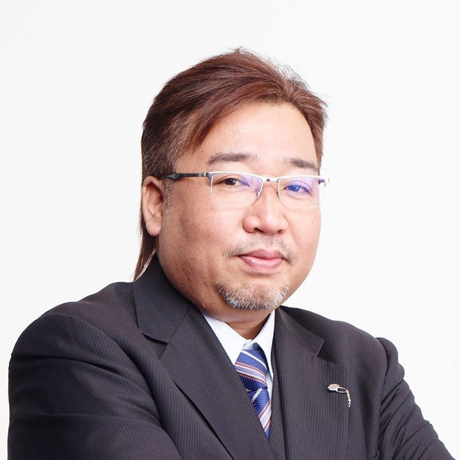
大関 興治
株式会社セカンドファクトリー
代表取締役 CEO & CVO

八子 知礼
株式会社ウフル
IoTイノベーションセンター所長 兼 エグゼクティブコンサルタント

千代田 まどか
Microsoft Corporation
コマーシャル・ソフトウェア・エンジニアリング本部 テクニカルエバンジェリスト

目代 昌幸
Microsoft MVP for Office Servers and Services
株式会社ソノリテ
シニア・エバンジェリスト

宮川 麻里
Microsoft MVP for Office Servers and Services
フリーランス
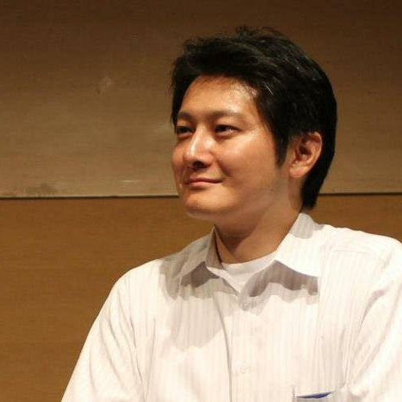
山崎 淳朗
Microsoft MVP for Office Servers and Services
PiecePoint株式会社
ITアーキテクト

杉本 和也
Microsoft MVP for Business Solutions
CData Software Japan 合同会社
Lead Engineer

清水 優吾
Microsoft MVP for Data Platform
株式会社セカンドファクトリー
シニアテクニカルアーキテクト

鈴木 雅宏
Microsoft MVP for Business Solutions
ソフトバンクテクノロジー株式会社
吉島 良平
Microsoft MVP for Business Solutions
Pacific Business Consulting, Inc.
取締役/戦略事業推進室長

山本 誠樹
Microsoft MVP for Microsoft Azure
株式会社 SRIA
技術フェロー
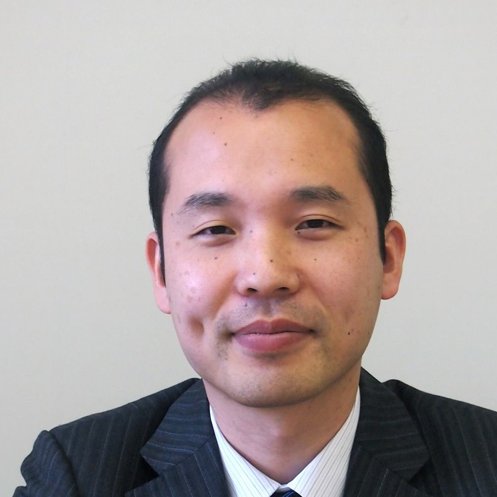
胡田 正彦
Microsoft MVP for Cloud and Datacenter Management
日本ビジネスシステムズ株式会社
パートナーアライアンス本部クラウドアライアンス開発部部長

北川 剛
アマゾン ウェブ サービス ジャパン株式会社
プラットホームビジネス開発部 ビジネス開発マネージャー(データベース)
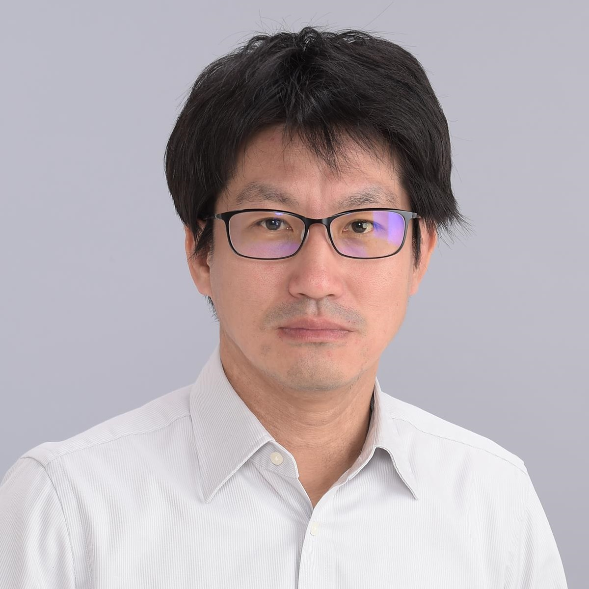
澤田 雅也
Microsoft MVP for Cloud and Datacenter Management
総合サービス株式会社
システム事業部統括部長
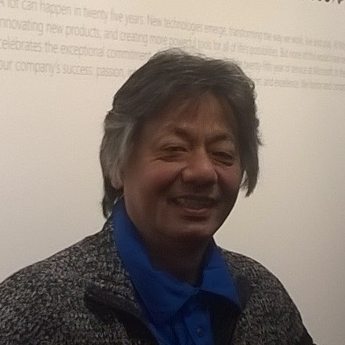
髙尾 哲朗
Microsoft MVP for Visual Studio and Development Technologies
.NETラボ、株式会社エフシーケー

木澤 朋和
Microsoft MVP for Windows and Devices for IT
.NETラボ
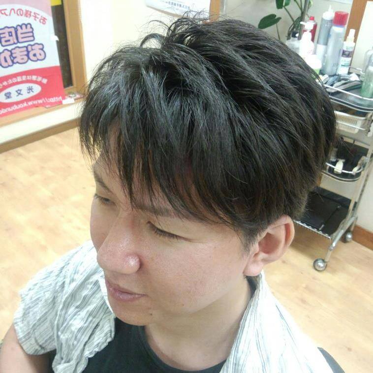
石野 光仁
Microsoft MVP for Visual Studio and Development Technologies
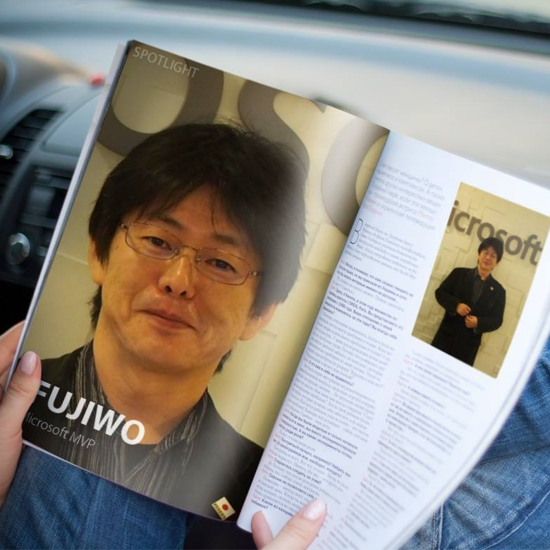
小島 富治雄
Microsoft MVP for Visual Studio and Development Technologies
福井コンピュータアーキテクト株式会社
ITアーキテクト
鈴木 孝明
Microsoft MVP for Visual Studio and Development Technologies
株式会社グラニ
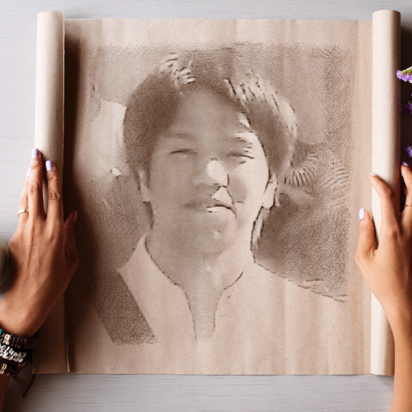
室星 亮太
Microsoft MVP for Visual Studio and Development Technologies
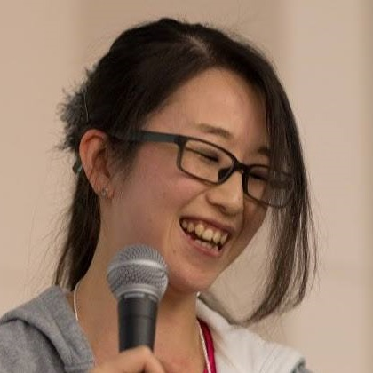
石田 真彩
Microsoft MVP for Microsoft Azure
株式会社オープンストリーム

櫻庭 祐一
Java Champion
ロッシェル カップ
ジャパン・インターカルチュラル・コンサルティング

寺田 佳央
Java Champion 日本マイクロソフト株式会社
友部 充貴
株式会社メディアステーション
人事部人事課長

山岡 まどか
楽天株式会社
顧客戦略統括部 お買いものパンダプロデューサー

半谷 充生
楽天株式会社
仙台プロデュースグループ

VOLLY Project
株式会社ラナエクストラクティブ
太田 伸志
株式会社ラナエクストラクティブ
代表取締役社長兼CEO
古飯塚 譲
株式会社ラナエクストラクティブ
プランナー

関 満徳
グロースエクスパートナーズ株式会社
ITアーキテクト
松本 吉生
Microsoft MVP for Data Platform
兵庫県立神戸工業高等学校
主幹教諭

uwabami
アートユニット／イラストレーター
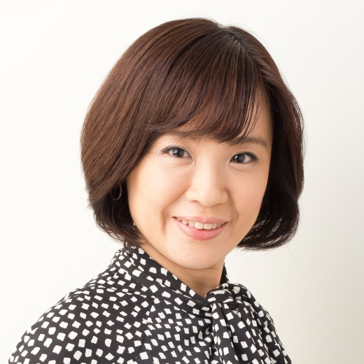
式町 久美子
一般社団法人日本プロポーザルマネジメント協会
代表理事

新田 順也
Microsoft MVP for Word
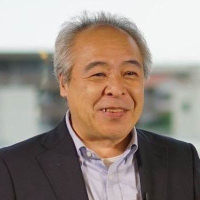
田中 亨
Microsoft MVP for Excel

加賀田 猛
Microsoft MVP for Data Platform

河合 浩之
Microsoft MVP for PowerPoint

東 賢
インフラジスティックス・ジャパン株式会社
シニアUXアーキテクト/代表取締役
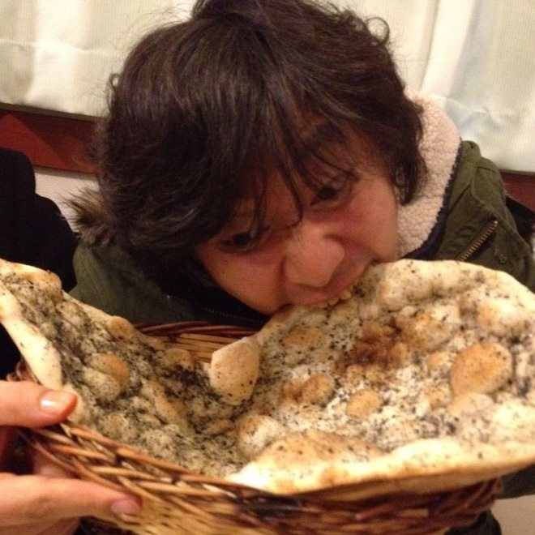
牛尾 剛
Microsoft Corporation
Takuo Robert Nishi
Microsoft Corporation
Enterprise Client & Mobility Senior Program Manager

久保 彩
株式会社クニエ
シニアコンサルタント
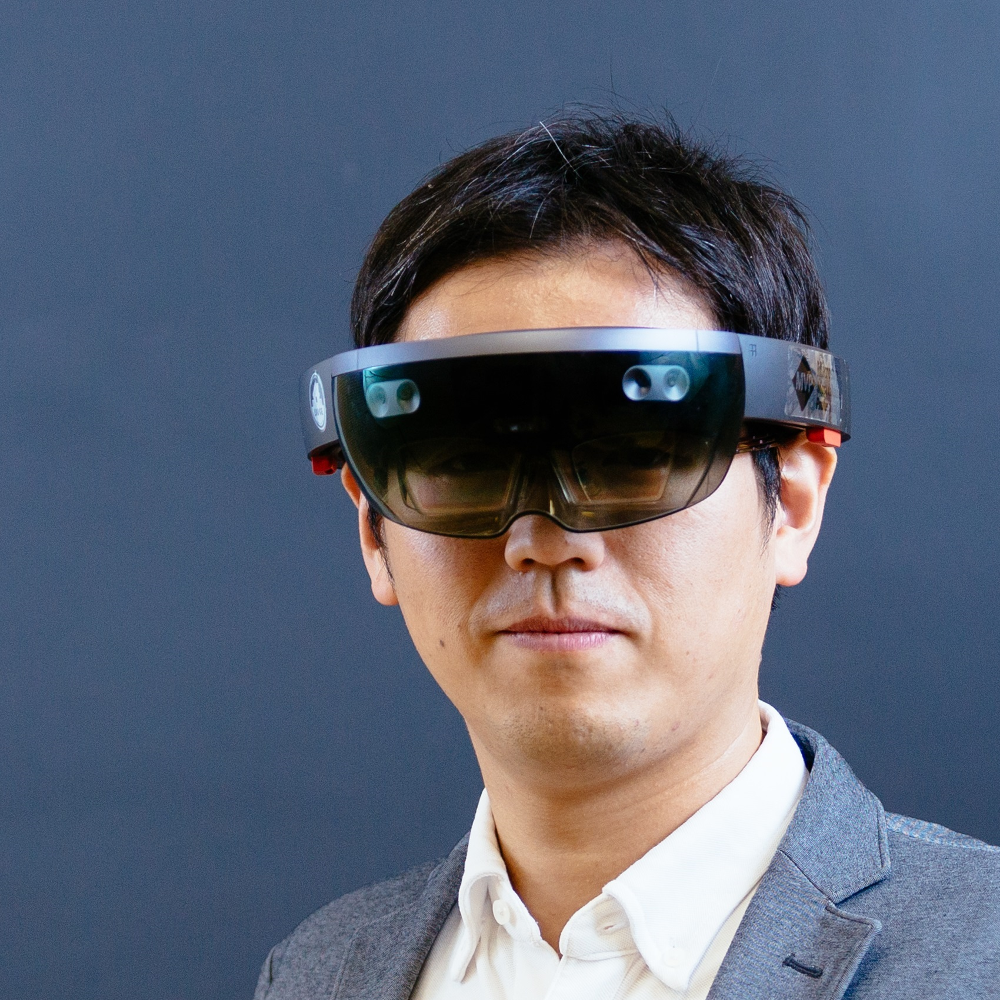
中村 薫
Microsoft MVP for Windows Development
HoloLab
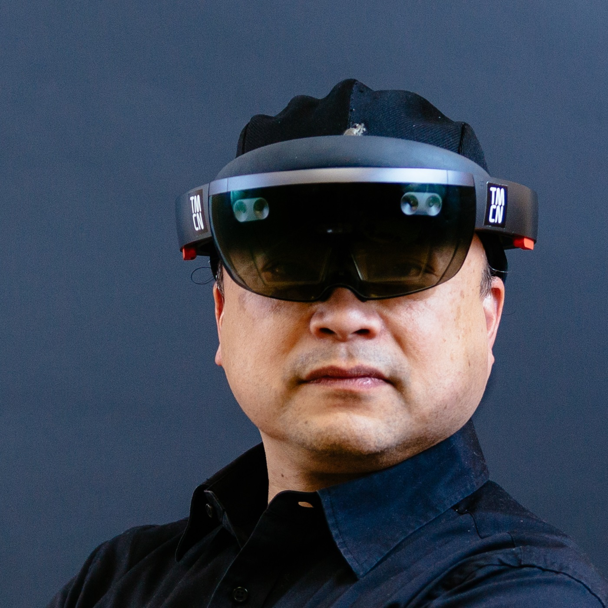
初音 玲
Microsoft MVP for Windows Development
HoloLab
前本 知志
Microsoft MVP for Windows Development
HoloLab

上山 晃弘
HoloLab

森 博之
Microsoft MVP for Visual Studio and Development Technologies
フリーランス
木達 一仁
株式会社ミツエーリンクス
取締役社長（CTO）